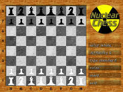
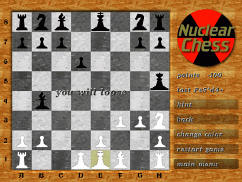

- This Site
- Information
- News
- Game Links
- About me
- Bitbucket
- Software
- PC Games
- Penguin Command
- BumpRace
- Black-Box
- Castle-combat
- NuclearChess
- Web Games
- jsNumbers
- Zaurus Games
- zSubHunt
- zBlack-Box
- zNumbers
- zMerlin
- zTappy
- zChain
- VR3 Software
- Black-Box-VR3
- Numbers
- Easy install
- Libs
- SFont
- Fonts for SFont
NuclearChess
- There is a new Nuclear Chess implementation
- The new Nuclear Chess can be played right in your browser and also on your mobile phone. The rest of this page is outdated.

- What is NuclearChess?
- NuclearChess is a chess variant. Whenever a piece is captured, both pieces and all pieces on neighbour fields die. Games are short and fun even for people who usually don't play chess.
- Downloads

- What's new in version 1.0.0?
- Fixed memory corruption bug, which resulted in a crash on capture on many systems
- Authors
- This is a family production by Harald Bartel (AI, main code), Ulf Bartel (C conversion) and Karl Bartel (graphics). Once tested by Holger Bartel (who lost).